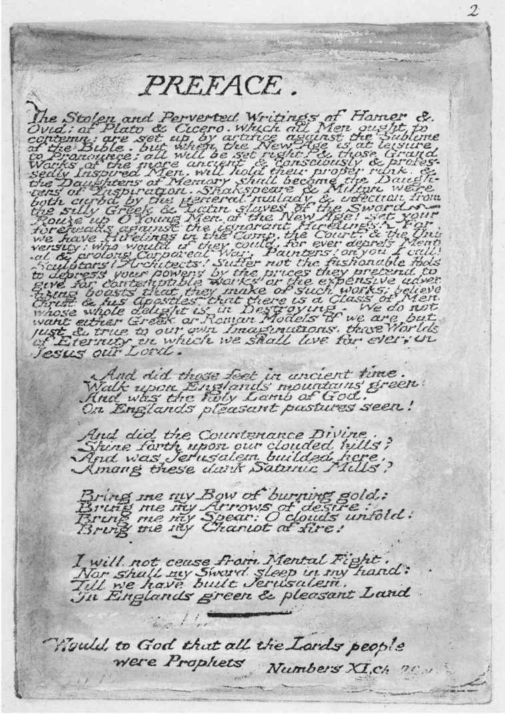

1908年，一出新剧在美国的华盛顿特区上演，剧作家伊斯雷尔·赞格威尔是个犹太人，出生于英格兰，父母分别来自拉脱维亚和波兰。除了戏剧之外，他还是个演说家，并且积极倡导犹太复国主义。时任美国总统的西奥多·罗斯福对于这出新剧非常感兴趣，该剧讲述了一个俄国犹太裔家庭为了躲避种族屠杀而移居美国的故事。在男主角看来，“美国是上帝的熔炉，来自欧洲的各个种族在这里融合并改造……德国人和法国人、爱尔兰人和英格兰人、犹太人和俄罗斯人——和你们一起进入这个大熔炉！上帝正在创造美国人”。这出戏剧的标题《熔炉》被用来形容美国的独特命运。作为一个新生国家，来自世界各地的移民，不管他们原本属于哪个种族，在这里都受到欢迎，能开启新的生活。
但是那样的命运真的只属于美国？两千多年来，英国一直是个大熔炉，凯尔特人、罗马人、盎格鲁–撒克逊人、北欧人、诺曼人、法国新教的胡格诺派教徒、荷兰人、汉诺威人、犹太人、移民、难民、前殖民地属民、欧洲及其他地区的各个种族在这里融合并改造。他们带来自己的语言，让英语变得无限丰富，这是造成英格兰文学独特的丰富性和多样性的主要原因之一。
17世纪早期，具有盎格鲁和意大利混合血统的词典编纂者约翰·弗洛里奥将法国人米歇尔·德·蒙田的随笔译成英文，从而引入了大量新词和短语，对莎士比亚的后期作品产生了深刻影响。在20世纪，爱尔兰人詹姆斯·乔伊斯和塞缪尔·贝克特以前所未有的独创性（指乔伊斯的作品）和精确性（指贝克特的作品）重塑英语。来自加勒比海地区的诗人（有些人具有英国血统），比如爱德华·卡马乌·布拉恩韦特和林顿·奎西·约翰逊，从他们的方言中提炼出一种特殊的语言，为英格兰诗歌注入了新的活力。正是在对抗“传统”的过程中，他们变成了传统的一部分，通过T.S.艾略特所描述的那种方式来改变整个现存的秩序。林顿·奎西·约翰逊提出要寻求“新的词语秩序”，这取决于他与自己继承的英国诗歌遗产之间的对话：
（选自《我的革命同志：诗选》，企鹅经典系列，2002）
“外来的”作家质疑并重估传统，因为这一传统属于殖民历史，他们的人民曾遭受压迫的那段历史。但与此同时，他们又时常表达出一种感激和责任，以这种方式来“归化”自己——正是历史上的那些英格兰作家给了他们工具和意志，去寻找属于他们自己的声音。在20世纪来自特立尼达的作家当中，涉猎范围最广的两个人分别是左翼历史学家、散文家、以描写板球运动而知名的作家C.L.R.詹姆斯和右翼小说家、辩论高手、游记作家V.S.奈保尔。虽然这两人难得意见一致，但说到英格兰文学传统的重要性时，他们必然会表示赞同。
德里克·沃尔科特沿着英格兰和威尔士、盎格鲁–撒克逊和凯尔特之间争议不断的边缘地带继续前进。当他写到自己“遭受剥夺”时，读者的最初反应是，他想要展现帝国主义或种族主义所造成的迫害。但他其实另有所指：
正如埃德蒙·伯克在法国大革命时发出哀叹，沃尔科特也惋惜骑士时代一去不返。作家不再流着眼泪幻想亚瑟王从阿瓦隆岛归来。相反，现代文学以愤怒的态度来回顾这一切。1954年，文学评论家大卫·西尔维斯特写了一篇文章《厨房水槽》，这个标题让人想起约翰·布拉特比的画作，后者试图将日常生活中的平淡和无聊引入英格兰艺术。“厨房水槽现实主义” [5] 这一术语很快就被用来形容由“愤怒的青年”所创作的戏剧和小说，这些作家沿着布拉特比的思路来改造文学。其中最著名的例子是约翰·奥斯本的剧作《愤怒的回顾》，该剧于1956年由皇家宫廷剧院搬上舞台。同一年爆发的苏伊士运河危机标志着殖民地反抗英帝国斗争的转折点。
骑士精神和厨房水槽之间的对立关系重演了传奇故事和现实主义之间的古老战役。沃尔科特是个擅长创作史诗和抒情诗的诗人，同时也是剧作家。他在圣卢西亚人的语言中发现了美感，而不是平淡。他表现出分裂的归属感：他是传奇故事的守护者，虽然艺术的民主化发展减弱了传奇故事的魅力，但正是这种民主化的过程造就了沃尔科特，让他从一个前殖民地属民变成了守护者。虽然他将自己视为局外人，游走在边缘地带，而不是在内部定居，但他想要继承亚瑟王传奇以及英格兰的持异议者借用抒情诗来表达立场的传统，后者可以追溯到14世纪英格兰的一名农夫兼诗人在马尔文山上的一场幻梦。
沃尔科特在仲夏的天路历程中，走入了他的文化遗产。在之前引用的那首诗中，他在沃里克郡一家木结构酒吧的花园中听到几位老人在谈话，他们的声音让他联想到莎士比亚笔下的“浅薄”法官和“沉默”法官。沃尔科特看到当地的自然景色“隐藏”在乔治·奥威尔在《向加泰罗尼亚致敬》里所描述的“英格兰的深度沉睡”中，他发现自己被读到的内容深深吸引。诗人并没有终止脑海中的搏斗，也没有就此停笔。他追踪着那些曾经在英格兰的绿色山丘上行走的足迹，包括朗格兰、弥尔顿、班扬和布莱克。他延续着前辈的希望，不仅是在当下的现实生活中，同时也是在英格兰文学的传统中，憧憬新的土地，新的耶路撒冷。

图11 “那些足迹”的原稿：威廉· 布莱克在《致弥尔顿》（1804-1811）的序言中，预言了一个“新的时代”，在这个时代英格兰将成为“新的耶路撒冷”